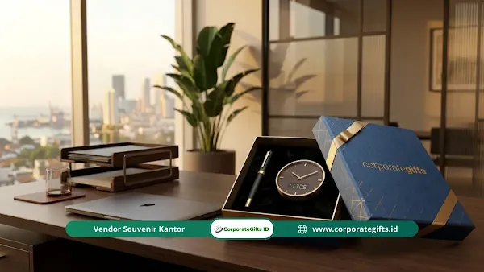

Corporate Gifts ID - Apa saja jenis milestone karyawan yang wajib dirayakan oleh perusahaan? Secara umum, terdapat lima kategori utama yang berdampak besar terhadap retensi dan loyalitas: milestone masa kerja (work anniversary), kinerja (pencapaian target), karier (promosi), momen personal (kehidupan pribadi), dan pencapaian keberhasilan tim.
Poin Kunci Employee Milestone Recognition:
- 5 Dimensi Apresiasi: Mencakup tenure (waktu), kinerja (target), karier (promosi), momen personal (hidup), dan pencapaian tim.
- Peningkatan Keterikatan: Riset Gallup membuktikan karyawan yang diapresiasi secara bermakna memiliki engagement 3 hingga 4 kali lebih tinggi.
- Atasi Recognition Gap: Melewatkan tahun ke-2 hingga ke-4 tanpa apresiasi membuat karyawan merasa tidak terlihat dan menurunkan motivasi.
- Hadiah Seimbang: Menyelaraskan bobot momen dengan cinderamata personal, plakat akrilik, hingga corporate gift set mewah.
Dalam perjalanan karier seorang karyawan, ada banyak momen yang datang silih berganti. Namun tidak semua momen memiliki bobot yang serupa dan tidak semuanya harus diapresiasi dengan cara yang seragam. Perusahaan yang memiliki program recognition teruji tidak merayakan segala hal secara serampangan, melainkan merayakan pencapaian yang tepat pada waktu yang tepat.
Panduan ini mengupas tuntas lima kategori utama employee milestone yang paling berdampak positif bagi iklim kerja, aspek mana yang sering luput dari perhatian HR, serta bagaimana memadukannya dengan cinderamata korporat yang representatif.
Urgensi Memilih Milestone yang Tepat untuk Dirayakan
Program pengakuan (recognition) yang tidak terarah dan terlalu sering tanpa landasan jelas dapat kehilangan nilai esensialnya. Bayangkan sebuah tim yang mengadakan apresiasi seremonial setiap pekan tanpa pencapaian konkret; perlahan penghargaan tersebut hanya terasa sebagai rutinitas administratif yang hampa.
Sebaliknya, ketika manajemen merayakan momen yang benar-benar bermakna seperti perayaan masa kerja 5 tahun, kelulusan masa probation, atau keberhasilan memenangkan tender strategis, karyawan merasa dihargai secara personal seutuhnya. Mereka tidak lagi dipandang sekadar deretan angka produktivitas dalam laporan bulanan.
Riset dari Gallup menunjukkan bahwa talenta yang memperoleh apresiasi bermakna dalam 7 hari terakhir menunjukkan keterikatan kerja (engagement) 3 hingga 4 kali lipat lebih tinggi dibanding rekan yang diabaikan. Kata kuncinya terletak pada pengakuan yang bermakna dan personal, bukan sekadar frekuensi yang berlebihan.
5 Kategori Utama Employee Milestone Perusahaan
Tonggak pencapaian karyawan dapat dikelompokkan ke dalam lima pilar strategis yang menyentuh berbagai aspek perjalanan profesional mereka:
1. Milestone Berbasis Masa Kerja (Tenure Milestones)
Tenure milestone adalah bentuk penghargaan paling umum, yakni perayaan hari ulang tahun masa kerja (work anniversary). Sebagian besar perusahaan hanya berfokus pada angka bulat seperti tahun ke-1, ke-5, dan ke-10. Padahal, karyawan yang melewati tahun ke-2, ke-3, atau ke-4 tanpa apresiasi apa pun kerap merasa kontribusi konsisten mereka tidak diperhatikan.
- Bulan Pertama (30 Hari): Penuntasan proses orientasi onboarding awal.
- 90 Hari Kerja: Keberhasilan melewati masa percobaan (probation) dan resmi diangkat menjadi staf permanen.
- Tahun Pertama (1 Year Milestone): Fondasi loyalitas dan adaptasi penuh budaya kerja.
- Tahun Ketiga & Kelima: Pengakuan atas stabilitas kepemimpinan dan dedikasi operasional.
- Tahun Kesepuluh ke Atas: Simbol kesetiaan tertinggi yang layak dihargai dengan cinderamata prestisius.
2. Milestone Berbasis Kinerja (Performance Milestones)
Pencapaian target kuantitatif maupun kualitatif memberikan dorongan motivasi yang sangat kuat. Sayangnya, perusahaan sering kali hanya memberikan bonus finansial instan tanpa pengakuan formal di depan rekan sejawat. Menggabungkan insentif materiil dengan piagam penghargaan atau gift set khusus memberi kepuasan emosional yang jauh lebih membekas.
- Melampaui target volume penjualan kuartalan atau tahunan.
- Menuntaskan proyek strategis lintas batas waktu dengan efisiensi anggaran terbaik.
- Menerima penilaian sempurna (A rating) dalam evaluasi kinerja berkala.
- Mendapatkan apresiasi atau testimonial kepuasan luar biasa dari klien eksternal.
3. Milestone Berbasis Karier (Career Milestones)
Perubahan status profesional menandai lompatan tanggung jawab yang signifikan dalam kehidupan seseorang. Merayakannya secara resmi mengirimkan pesan positif bahwa korporasi berinvestasi nyata dalam pengembangan jenjang karier individu.
- Promosi ke jenjang manajerial atau kepemimpinan baru.
- Penyelesaian sertifikasi keahlian teknis bergengsi yang didanai kantor.
- Rotasi sukses ke divisi strategis atau cabang operasional baru.
- Penunjukan sebagai mentor resmi bagi jajaran talenta junior.

Pemberian paket corporate gift apresiasi pencapaian karier dan loyalitas kerja karyawan perusahaan.
4. Milestone Personal Karyawan (Life Milestones)
Kategori ini menyentuh sisi kemanusiaan karyawan di luar urusan pekerjaan teknis. Di lingkungan budaya kerja Indonesia yang menjunjung tinggi kekeluargaan dan keramahan sosial, pengakuan atas momen hidup pribadi menciptakan ikatan loyalitas batin yang luar biasa kokoh.
- Pernikahan karyawan.
- Kelahiran atau kehadiran anggota keluarga baru.
- Ulang tahun kelahiran pribadi.
- Kelulusan jenjang pendidikan tinggi lanjutan.
- Momen pemulihan kesehatan setelah menjalani perawatan medis serius.
5. Milestone Berbasis Tim & Kolaborasi (Team Milestones)
Apresiasi tidak melulu ditujukan kepada perseorangan. Keberhasilan kolektif memecahkan target besar, meluncurkan produk aplikasi baru, atau melayani lonjakan transaksi musiman tanpa cela harus dirayakan bersama guna meruntuhkan sekat ego sektoral (silo mentality).
Milestone yang Paling Sering Diabaikan Perusahaan
Dalam praktiknya di banyak institusi korporasi dan BUMN, terdapat titik-titik krusial yang kerap terlewat dari kalender pengakuan HR:
- Anniversary di Tahun Genap (Tahun ke-2, 3, dan 4): Rentang waktu ini sering menjadi fase rentan di mana karyawan merasa jenuh dan tergoda mencari peluang di tempat lain karena merasa kontribusi hariannya dianggap biasa saja.
- Kelulusan Masa Percobaan (Probation Pass): Titik ketika karyawan baru resmi menjadi bagian keluarga tetap perusahaan. Merayakannya dengan welcome back pack atau plakat mini mengukuhkan komitmen kerja sejak dini.
- Kontribusi Tim Pendukung (Back-Office & Support): Tim administrasi, legal, IT infrastruktur, dan customer care yang jarang terlihat di garis depan pendapatan sering kali terlupakan saat apresiasi tahunan dibagikan.
Cara Menyesuaikan Program Milestone dengan Skala Bisnis
Penerapan program ini wajib diselaraskan dengan skala organisasi dan nilai budaya internal agar dapat berkelanjutan:
- Perusahaan Rintisan & Skala Menengah (50-200 Karyawan): Mulailah dengan dua pilar utama: masa kerja (work anniversary) dan kelulusan probation, dipadukan dengan ucapan personal langsung dari pendiri atau pimpinan divisi.
- Korporasi Skala Besar & Multinasional (500+ Karyawan): Manfaatkan sistem HRIS terintegrasi yang secara otomatis mendata jadwal anniversary dan mendistribusikan pesanan cinderamata terstandarisasi ke alamat masing-masing karyawan.
Tabel Rekomendasi Hadiah Sesuai Jenis Milestone
Setiap momen memiliki kedalaman makna tersendiri. Menyelaraskan bobot emosional momen dengan wujud fisik hadiah adalah kunci keberhasilan program retensi:
| Kategori Milestone | Momen Spesifik Karyawan | Rekomendasi Bentuk Apresiasi | Dampak Strategis bagi Organisasi |
|---|---|---|---|
| Tenure Milestones | Work anniversary tahun ke-1 | Plakat akrilik custom nama + tumbler stainless vacuum flask | Memperkuat adaptasi awal dan menekan tingkat turnover tahun pertama |
| Tenure Milestones | Anniversary tahun ke-5 & ke-10 | Corporate gift set hardbox mewah, pen logam grafir, & logam mulia | Membangun loyalitas mendalam bagi jajaran pilar senior perusahaan |
| Career Milestones | Promosi jabatan / peran manajerial | Buku agenda kulit PU eksklusif + surat apresiasi resmi CEO | Menumbuhkan kebanggaan profesional dan kesiapan memimpin tim baru |
| Life Milestones | Pernikahan atau kelahiran anak | Hamper perlengkapan keluarga elegan & kartu ucapan personal | Menciptakan kehangatan batin bahwa perusahaan peduli kehidupan personal |
| Team Milestones | Keberhasilan proyek lintas divisi | Trofi kebersamaan, merchandise apparel custom, & jamuan makan | Menghilangkan sekat silo dan menumbuhkan solidaritas tim kerja |
Catatan: Seluruh paket gift set anniversary dan apresiasi karyawan di atas dapat dikustomisasi lengkap dengan grafir nama penerima dan kemasan hardbox branding elegan di CorporateGifts.ID.
FAQ: Pertanyaan Seputar Milestone Karyawan

Ditulis oleh: Arinda Zakia
Senior Corporate Gifting SpecialistSpesialis strategi employee recognition dan corporate gift di CorporateGifts.ID. Berpengalaman mendampingi tim People & Culture dari berbagai perusahaan terkemuka dalam merancang program apresiasi karyawan yang mampu meningkatkan retensi dan kebanggaan berkarier.
Lihat Profil Lengkap & Panduan Lainnya